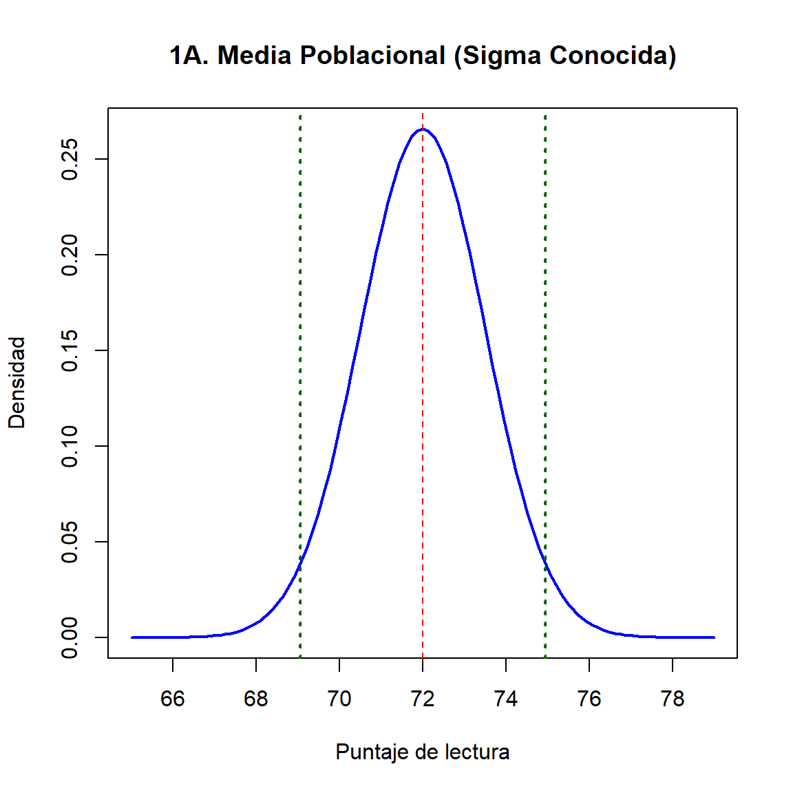
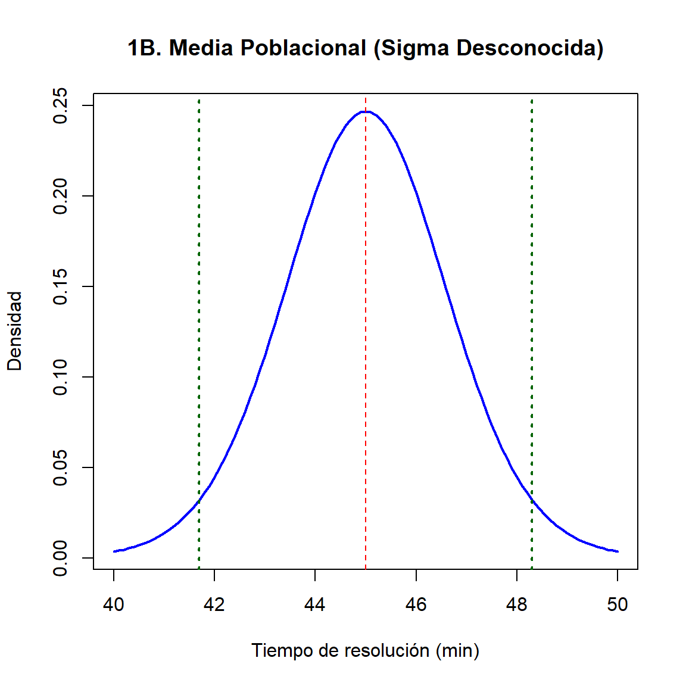
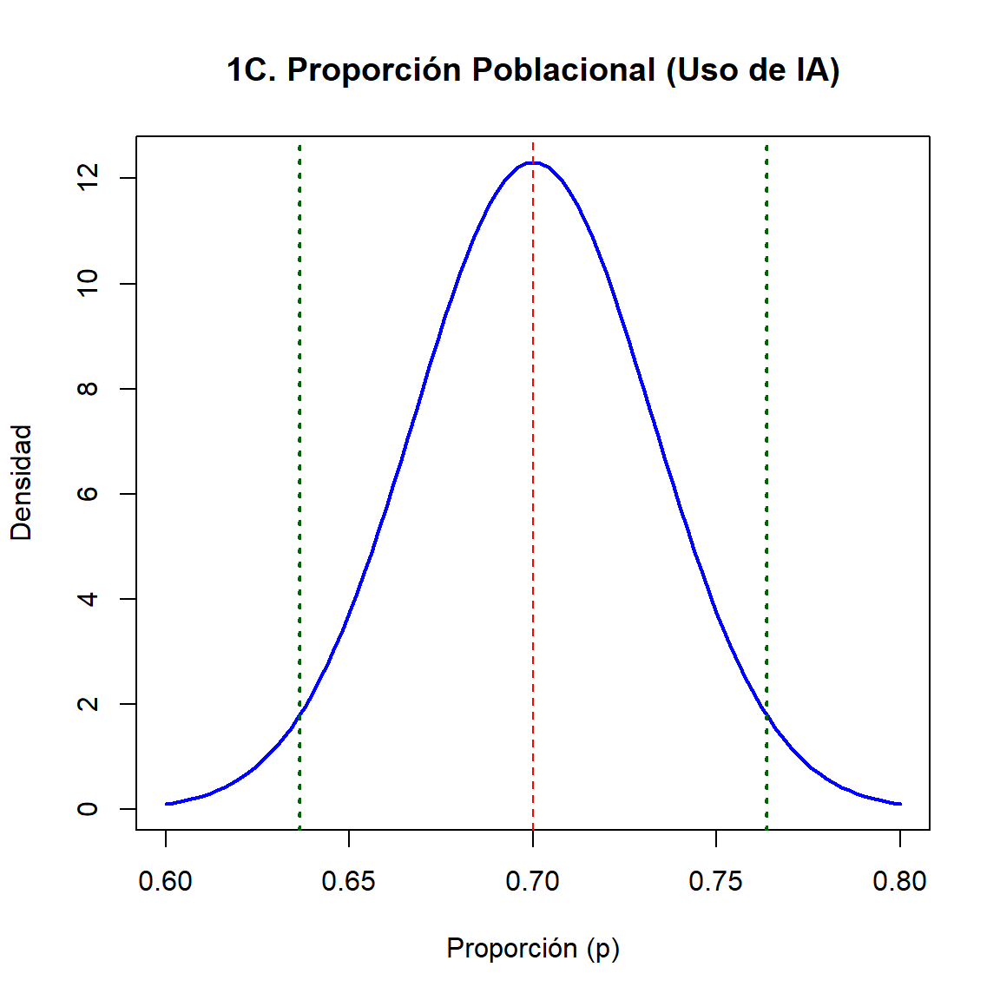
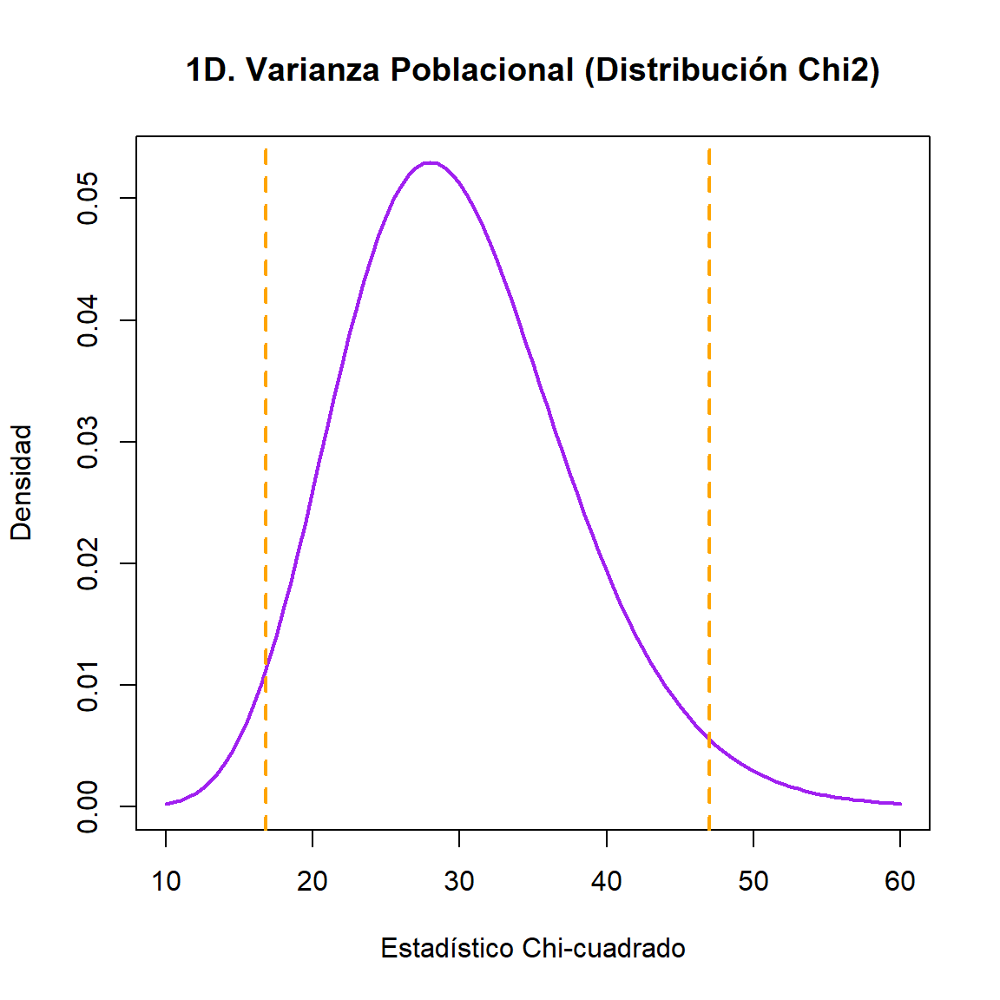
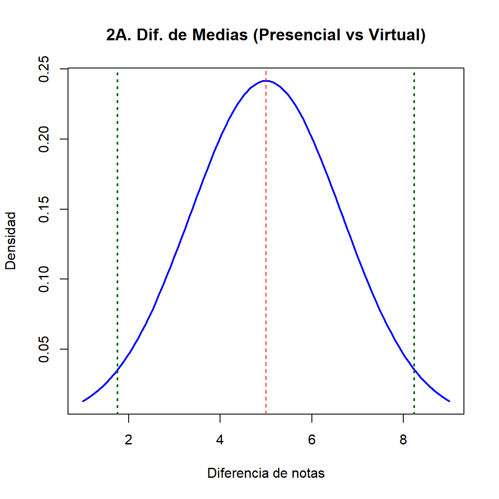
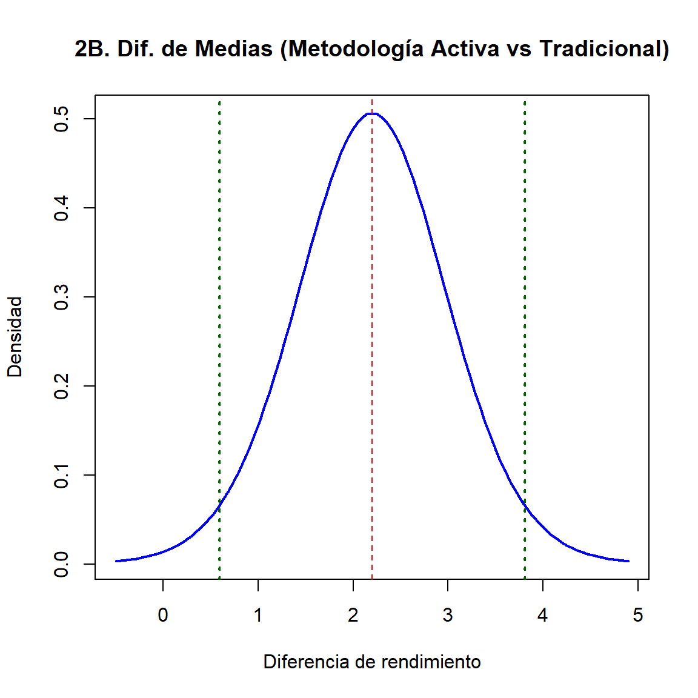
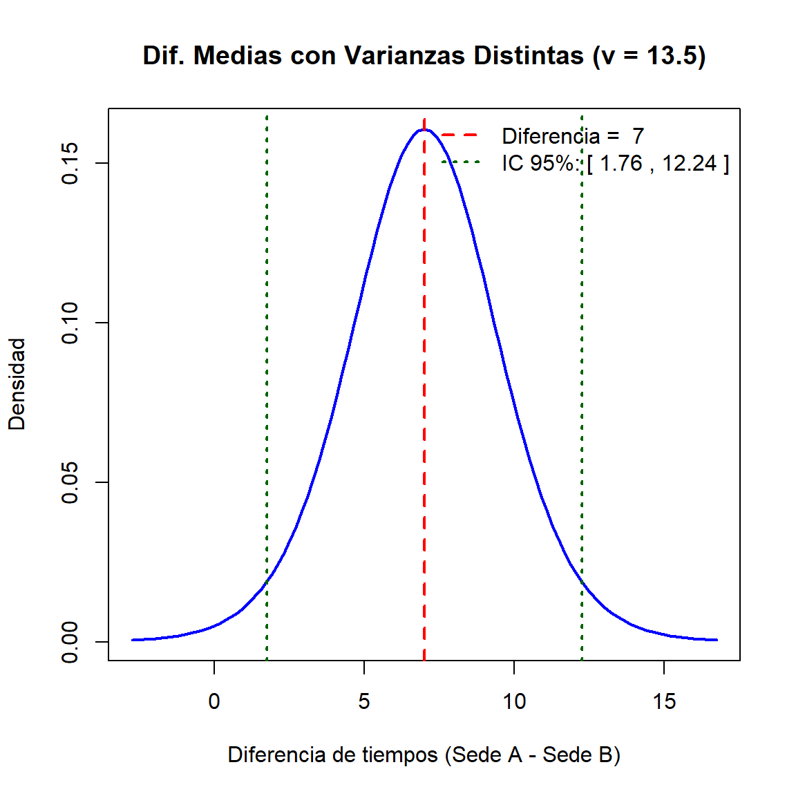
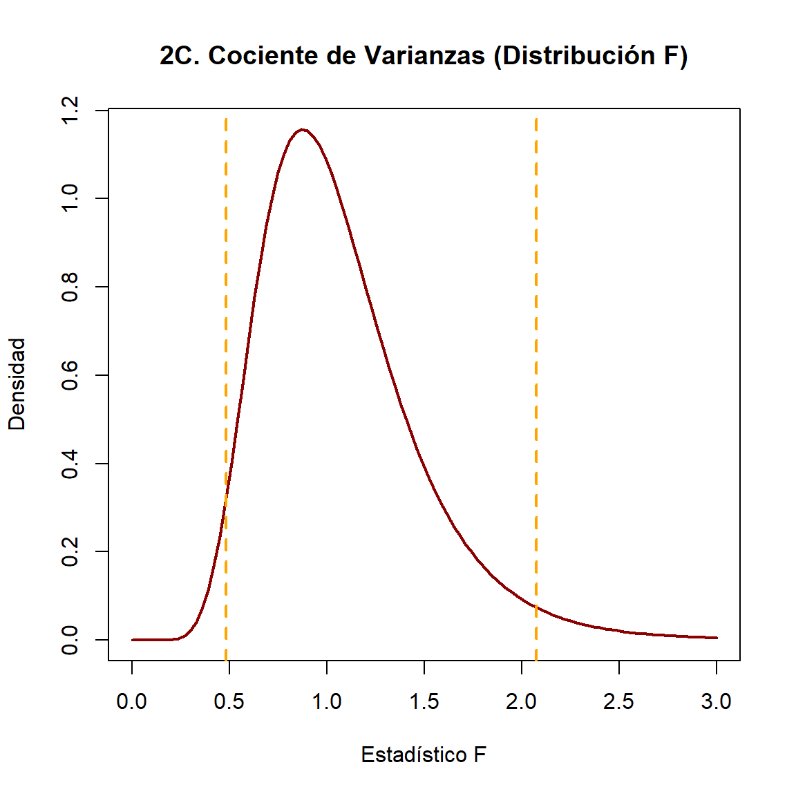
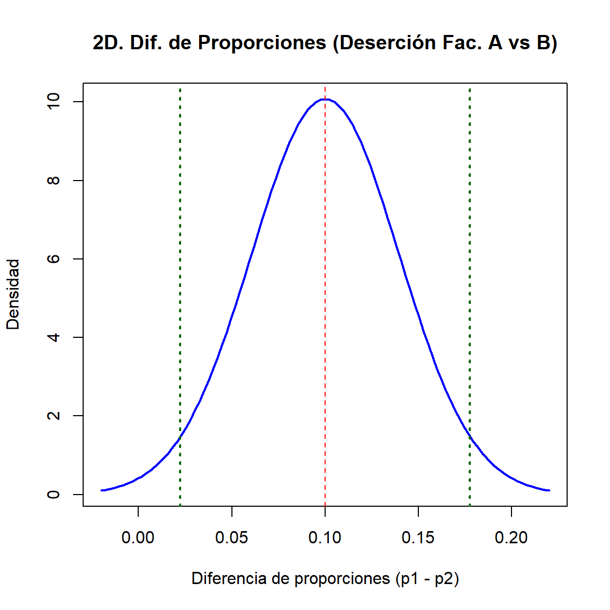

Ver código
options(
knitr.table.format = "html",
scipen = 999
)options(
knitr.table.format = "html",
scipen = 999
)librerias
if(!require(tidyverse)){
install.packages("tidyverse")}
library(tidyverse)
if(!require(psych)){
install.packages("psych")}
library(psych)
if(!require(modeest)){
install.packages("modeest")}
library(modeest)
if(!require(e1071)){
install.packages("e1071")}
library(e1071)
if(!require(ggthemes)){
install.packages("ggthemes")}
library(ggthemes)En todo este tema vamos a suponer que estamos estudiando una población cuya distribución es conocida excepto en un parámetro (\mu, \sigma^2, \lambda, \dots) al que llamaremos \theta A la distribucion de la poblacion la denotaremos como f(x)
Diremos que nos encontramos ante un problema de estimación cuando, dada una población con una distribución f(x) donde 0 es un parametro desconocido, aventuremos o infiramos en base a los datos muestrales X_1, X_2, \dots, X_n el valor de \theta. si al inferir el parametro damos como un unico valor estaremos ante un problema de estimacion puntual.
Estimacion puntual\hat{\theta}(X_1, X_2, \dots, X_n): sera una funcion de la muestra aleatoria (un estadistico) que utlizaremos para estimar el valor del parametro \theta.
Estimacion\hat{\theta}: valor obtenido del estimador al sustituir por los valores de una muestra completa.
cuando no haya lugar para la confusion designaremos al estimador simplemente por \hat{\theta}.
Un estimador es, por tanto, un estadístico y, por ello, es una v.a. con una determinada distribución de probabilidad llamada distribución muestral.
Dado un parámetro, podríamos utilizar distintos estimadores puntuales para estimarlo. Por ejemplo, para estimar la varianza de la población podemos utilizar la varianza muestral o la cuasi-varianza muestral. ¿Cuál es mejor? Veamos a continuación como comprobar si un estadístico es un buen estimador de un parámetro. Para ello le exigiremos una serie de propiedades. Como el estadístico es una variable aleatoria, las propiedades se las tenemos que exigir a su distribución de probabilidad.
Un estadístico se considera un buen estimador de un parámetro si cumple: ser insesgado, ser consistente y ser eficiente.
A. INSESGADEZ
Un estimador \hat{\theta} es insegnado si E|\hat{\theta}| = \theta . Es decir, su distribucion esta centrada en el parametro a estimar.
Ejemplos: sea una m.a.s X_1, X_2, \dots, X_n \text{ tal que } E[X_i] = \mu \text{ y } Var[X_i] = \sigma^2
a) consideremos como estimador de la media poblacional a la media muestral. Es decir \hat{\mu} = \bar{X}_n . Por el tema anterior, sabemos que E[\bar{X}_n] = \mu . por tanto, la media muestral es estimador insesgado de la media poblacional.
b) supongamos como estimador de la varianza poblacional a la varianza muestral, \hat{\sigma}^2 = s_n^2 .Del tema anterior, sabemos que E[s_n^2] = \frac{n-1}{n}\sigma^2. Por tanto, la varianza muestral no es un estimador insesgado de la varianza poblacional
c) consideremos ahora como estimador de la varianza poblacional a la cuasi-varianza muestral, \hat{\sigma}^2 = s_n^2. Del tema anterior sabemos que E[{s_n^*}^2] = \sigma^2. Por tanto, la cuasi-varianza muestral es un estimador insesgado de la varianza poblacional.
B. CONSISTENCIA
Diremos q \hat{\theta} es un estimador consistente de \theta si cumple: \lim_{n\to\infty} E[\hat{\theta}] = \theta \quad \text{y} \quad \lim_{n\to\infty} Var[\hat{\theta}] = 0 \iff \lim_{n\to\infty} P[\hat{\theta} = \theta] = 1
Esto significa que si tomaramos la mayor muestra posible, el estimador coincidiria con el valor del parametro.
Ejemplo: veamos que los estimadores de los cuales hemos hablado en el apartado anterior son consistentes.
a) si consideramos \hat{\mu} = \bar{X}_n. Se cumple que E[\bar{X}_n] = \mu y Var[\bar{X}_n] = \frac{\sigma^2}{n}. Pero tomando limites, \lim_{n \to \infty} \frac{\sigma^2}{n} = 0. por tanto, \bar{X}_n es estimador consistente.
b) si consideramos \hat{\sigma}^2 = s_n^2. se cumple que:
E[s_n^2] = \frac{n-1}{n}\sigma^2 \quad \text{y} \quad Var[s_n^2] = \frac{2(n-1)}{n^2}\sigma^4
Tomando limites,
\lim_{n\to\infty} \frac{n-1}{n}\sigma^2 = \sigma^2 \quad \text{y} \quad \lim_{n\to\infty} \frac{2(n-1)}{n^2}\sigma^4 = 0
por tanto, s_n^2 es un estimador consistente de \sigma^2.
c) si consideramos \hat{\sigma}^2 = {s_n^*}^2. se cumple que
E[{s_n^*}^2] = \sigma^2 \quad \text{y} \quad Var[{s_n^*}^2] = \frac{2}{n-1}\sigma^4
tomando limites,
\lim_{n\to\infty} \sigma^2 = \sigma^2 \quad \text{y} \quad \lim_{n\to\infty} \frac{2}{n-1}\sigma^4 = 0
por tanto, {s_n^*}^2 es un estimador consistente de la varianza poblacional.
C. EFICIENCIA
Dados dos estimadores de \theta, \hat{\theta}_1 \text{ y } \hat{\theta}_2 decimos que \hat{\theta}_1 es mas eficiente que \hat{\theta}_2, si Var[\hat{\theta}_1] < Var[\hat{\theta}_2]. Nos interesa el que tenga menos dispersion. Para comparar la eficiencia se construye el cociente \frac{Var[\hat{\theta}_1]}{Var[\hat{\theta}_2]} . Si es mayor que 1, entonces \hat{\theta}_2 es mas eficiente; si es igual a 1, entonces ambos estimadores son igual de eficientes; si es menor que 1, entonces \hat{\theta}_1 es mas eficiente.
Ejemplo: consideremos como estimadores de \sigma^2 \text{ a } s_n^2 \text{ y } {s_n^*}^2. Calculamos el cociente de las varianzas:
\frac{Var[s_n^2]}{Var[{s_n^*}^2]} = \frac{\frac{2(n-1)}{n^2}\sigma^4}{\frac{2}{(n-1)}\sigma^4} = \frac{(n-1)^2}{n^2} < 1 \text{ Por tanto, } s_n^2 \text{ es más eficiente.}
De los diferentes métodos de cálculo de los estimadores, nosotros veremos: a) Estimación por el método de los momentos. b) Estimación máximo-verosímil.
A. ESTIMACIÓN POR EL MÉTODO DE LOS MOMENTOS
Consiste en tomar como estimadores de los momentos poblacionales a los momentos muestrales. Se obtiene una ecuación de donde podemos despejar el parámetro a estimar.
B. ESTIMACIÓN MÁXIMO-VEROSÍMIL
Sea X una variable aleatoria con distribucion f(x ; \theta ) donde \theta es el parametro desconocido, sean X_1, X_2, \ldots, X_n n variables aleatorias independientes con la misma distribucion que X; es decir, sea y (X_1, X_2, \ldots, X_n) una mas bajo estas condiciones la distribucion conjunta de las variables aleatoria X_1, X_2, \ldots, X_n sera igual al producto de las marginales.
f(x_1, x_2, \ldots, x_n; \theta) = f(x_1; \theta) \cdot f(x_2; \theta) \cdot \ldots \cdot f(x_n; \theta)
si consideramos X_1, X_2, \ldots, X_n fijos y estudiamos esta funcion como funcion de \theta recibe el nombre de funcion de verosimilitud y se denomina por V(\theta)
sean \hat{\theta}_1 = u_1(X_1, X_2, \ldots, X_n) , \quad \hat{\theta}_2 = u_2(X_1, X_2, \ldots, X_n) , etc. diversos estimadores de \theta, De todos ellos pretendemos elegir el que haga maxima la funcion de verosimilitud. Es decir, un estimulador \delta sera estimador maximo-verosimil (EMV) de \theta si maximizar V(\theta)
Debido a que la función de verosimilitud es no negativa, continua y creciente, alcanzará su máximo en los mismos puntos que su logaritmo y por ello, y por razones de cálculo se suele maximizar InV(\theta) cuando esta depende de exponenciales. Asi pues, deberemos resolver la siguiente ecuacion.
\frac{d(\ln V(\theta))}{d\theta} = 0
En el caso de dos o más parámetros desconocidos, el procedimiento es el mismo. Por ejemplo, si tuviéramos V(\theta_1, \theta_2, \theta_3) los tres estimadores maximo verosimiles seran los que maximizan la funcion V(\theta_1, \theta_2, \theta_3) o su logaritmo. Se obtendrian al resolver las ecuaciones siguientes:
\frac{d(\ln V(\theta_1, \theta_2, \theta_3))}{d\theta_1} = 0 \land \frac{d(\ln V(\theta_1, \theta_2, \theta_3))}{d\theta_2} = 0 \quad \frac{d(\ln V(\theta_1, \theta_2, \theta_3))}{d\theta_3} = 0
Propiedades de los EMV
a) son consistentes
b) son asintoticamente eficientes. Es decir, tienen la varianza minima cuando el tamaño muestral tienden a infinito
c) si \hat{\theta} es estimador suficiente de \theta, el EMV de \theta es funcion de \hat{\theta}
d) son asintoticamente normales. Es decir, su distribucion tienden a la distribucion normal cuando tiende a infinito el tamaño de la muestra
e) si \hat{\theta} es EMV de \theta, entonces g(\hat{\theta}) es EMV de g(\theta), siendo g una aplicacion biyectica
Ejemplo: obtener el EMV del parametro de una v.a. X que sigue una distribucion de Bernouilli, X \rightarrow Be(p). Su funcion de cuantia es f(x; p) = p^x (1 - p)^{1-x}
Si elegimos una muestra de tamaño n, la funcion de verosimilitud correspondiente sera:
V(p) = \prod_{i=1}^{n} f(x_i; p) = p^{\sum_{i=1}^n x_i} (1-p)^{n - \sum_{i=1}^n x_i}
tomando logaritmos tenemos
\ln V(p) = \sum x_i \ln p + (n - \sum x_i)\ln(1 - p)
para obtener el EMV de p debemos resolver la ecuacion \frac{d(\ln V(p))}{dp} = 0
En este caso \frac{d(\ln V(p))}{dp} = \sum x_i \frac{1}{p} + \left(n - \sum x_i\right) \frac{(-1)}{(1 - p)} = 0
Haciendo operaciones e igualando denominadores obtenemos:
(1 - p)\sum x_i - p\left(n - \sum x_i\right) = \sum x_i - p\sum x_i - np + p\sum x_i = \sum x_i - np = 0
Despejando el valor de p obtenemos el estimador \hat{p} = \frac{\sum_{i=1}^n x_i}{n} = \bar{x}
por tanto EMV(p)= \frac{\sum x_i}{n}.Es decir, la proporcion de exitos de la muestra.
En la estimación puntual atribuimos al parámetro el valor correspondiente del estimador obtenido en la muestra aleatoria de tamaño n. Es claro, que dicho valor dificilmente coincidirá con el verdadero valor del parámetro aunque el tamaño de la muestra sea muy grande.
La estimación por intervalos consiste en atribuir al parámetro desconocido un rango de posibles valores (en base a los datos muestrales) que tengan una alta probabilidad de incluir entre ellos al valor del parámetro desconocido. Para ello será imprescindible conocer la distribución muestral del estadístico utilizado.
El intervalo estimado que debe contener al parámetro se llama intervalo confidencial o de confianza. Denominamos límites confidenciales a los extremos de dicho intervalo. Llamaremos nivel de confianza a la probabilidad de que un intervalo contenga al parámetro desconocido y se suele denotar por 1 − α . Se llama nivel de riesgo o de significación al valor de α .
Es decir,P ( θ ∈ [ a , b ] ) = 1 − α . Esto indica que el (1 − α )% de intervalos construidos contendrán al parámetro desconocido.
Denominaremos error muestral máximo a la diferencia entre el valor de la estimación muestral y el valor del parámetro; es decir, E = |\hat{\theta} - \theta| = \frac{b - a}{2}
Ejemplo: Sea θ el parámetro desconocido y θ el estimador que consideramos el cual sigue una distribución N ( θ , σ ˆ2 ) . Supongamos un error muestral máximo E = |\hat{\theta} - \theta| = 2\sigma.
Si calculamos la probabilidad de tener ese error o uno menor, obtendremos:
P(|\hat{\theta} - \theta| \le 2\sigma) = P(-2\sigma \le \hat{\theta} - \theta \le 2\sigma) = P\left(-2 \le \frac{\hat{\theta} - \theta}{\sigma} \le 2\right) = \phi(2) - \phi(-2) = 2\phi(2) - 1 = 0,9544 \text{ ya que el estimador seguía una distribución normal.} esta probabilidad podemos escribirla tambien de la siguiente forma:
P(-2\sigma \le \hat{\theta} - \theta \le 2\sigma) = P(2\sigma \ge \hat{\theta} - \theta \ge -2\sigma) = P(-2\sigma + \hat{\theta} \le \theta \le 2\sigma + \hat{\theta}) = P\left(\theta \in [\hat{\theta} - 2\sigma, \hat{\theta} + 2\sigma]\right) por tanto, el intervalo de confianza [\hat{\theta} - 2\sigma, \hat{\theta} + 2\sigma] tiene un nivel de confianza 1 - \alpha = 0,9544 o un nivel de significacion de \alpha = 0,0456. Esto equivale a decir que tenemos la confianza 0’9544 de que, extraida una muestra y calculado el valor de \hat{\theta}, este no se aleja del parametro mas de dos desviaciones tipicas o un riesgo de 0’0456 de que se aleja mas de esa cantidad.
Dicho de otro modo, si sale una muestra en que \hat{\theta} esta zona rayada el intervalo no contrenda a \theta.
Normalmente lo que se hace es fijar de antemano el nível de confianza y se busca el intervalo correspondiente a ese nível de confianza utilizando la distribución muestral del estadístico.
2.1.1 INTERVALO DE CONFIANZA PARA LA MEDIA
Si desconocemos la distribución de la población, podemos hallar un intervalo de confianza para la media, basándonos en un resultado que conocemos como Desigualdad de TChebychev.
Sea X una v.a. cualquiera con media µ y varianza σ2. Se cumple que:
P\left(\mu - \frac{k}{\sigma} \le X \le \mu + \frac{k}{\sigma}\right) \ge 1 - \frac{1}{k^2}
Usando el anterior resultado, aplicandolo a la variable aleatoria X y tomando \alpha = \frac{1}{k^2}, obtendriamos que el intervalo para el nivel 1 - \alpha seria:
[\bar{X}_n - \sigma/\sqrt{n\alpha}, \bar{X}_n + \sigma/\sqrt{n\alpha}]
Para analizar los resultados que presentamos a continuación, supongamos unapoblación que se distribuye normal de media µ y varianza poblacional σ2. También servirán cuando la población no es normal pero el tamaño muestral es grande.
a) si \sigma^2 es conocida
Ya sabemos que \frac{\bar{X}_n - \mu}{\sigma/\sqrt{n}} \to N(0,1). \text{ Sea } z_{1-\frac{\alpha}{2}} el percentil de la distribucion normal; es decir, \phi(z) = 1 - \frac{\alpha}{2}.
P\left( -z_{1-\frac{\alpha}{2}} \le \frac{\bar{X}_n - \mu}{\frac{\sigma}{\sqrt{n}}} \le z_{1-\frac{\alpha}{2}} \right) = 1 - \alpha
Haciendo operaciones P\left(\bar{X}_n - z_{1-\frac{\alpha}{2}}\sigma/\sqrt{n} \le \mu \le \bar{X}_n + z_{1-\frac{\alpha}{2}}\sigma/\sqrt{n}\right) = 1 - \alpha
Por tanto, el intervalo de confianza para \mu sera:
\left[ \bar{X}_n - z_{1-\frac{\alpha}{2}}\frac{\sigma}{\sqrt{n}}, \, \bar{X}_n + z_{1-\frac{\alpha}{2}}\frac{\sigma}{\sqrt{n}} \right]
b) si \sigma^2 es desconocida.
En este caso tenemos que \frac{\bar{X}_n - \mu}{S_n}\sqrt{n} \to t_{n-1} Por el mismo razonamiento anterior, si llamamos t_{n-1, \, 1-\frac{\alpha}{2}} al percentil de la distribucion t de student tal que P(t_{n-1} \le x) = 1 - \frac{\alpha}{2}, el intervalo de confianza al nivel de significacion \alpha (o equivalentemente, al nivel de confianza 1 - \alpha) sera:
\left[ \bar{X}_n - t_{n-1, \, 1-\frac{\alpha}{2}} \frac{S_n}{\sqrt{n}}, \, \bar{X}_n + t_{n-1, \, 1-\frac{\alpha}{2}} \frac{S_n}{\sqrt{n}} \right]
Ejemplo: Extraemos una m.a.s. de 60 estudiantes universitarios. Responden a una prueba de inteligencia espacial, en la que alcanzan una media de 80 y una varianza de 100. ¿Entre qué límites se hallará la verdadera inteligencia espacial media de los estudiantes, a un nivel de confianza del 99%?
1 - \alpha = 0.99 \implies \alpha = 0.01 \implies 1 - \frac{\alpha}{2} = 0.995
La varianza poblacional es desconocida y la población no es normal, pero el tamaño muestral es mayor que 30, por tanto, el intervalo correspondiente será:
\left[ \bar{X}_n - t_{n-1, \, 1-\frac{\alpha}{2}} \frac{S_n}{\sqrt{n}}, \, \bar{X}_n + t_{n-1, \, 1-\frac{\alpha}{2}} \frac{S_n}{\sqrt{n}} \right]
Buscamos en las tablas la distribucion t de student t_{60, \, 0.995} = 2.66.
Sabemos que \bar{X}_n = 80 \text{ y } s_n = 10. Sustituyendo en el intervalo de confianza tenemos
\left[ 80 - 2.66 \dfrac{10}{\sqrt{60}}, \, 80 + 2.66 \dfrac{10}{\sqrt{60}} \right]
por tanto, \mu \in [76.57, 83.43] con un nivel de confianza del 99\%.
2.1.2 INTERVALO DE CONFIANZA PARA LA PROPORCIÓN
Si en una población Bernouilli de parámetro p definimos la v.a. X= nº éxitos en la muestra, X sigue una distribución binomial de parámetros (n,p). Si la muestra es grande, tenemos que la proporción muestral P=X/n se distribuye aproximadamente como una normal N\left(p, \frac{pq}{n}\right) y podremos usar el teorema central del limite.
En una población Bernoulli, µ = p , σ 2= p ( 1 − p ) y si denotamos por P a la proporcion en la muestra \bar{X}_n = P Asi pues podemos aplicar el intervalo de confianza para la media con varianza conocida visto anteriormente, sustituyendo lo anterior y aproximado p(1-p) por P(1-P). Un intervalo de confianza aproximado para p a nivel 1 - \alpha seria:
\left[ P - z_{1-\frac{\alpha}{2}}\sqrt{\frac{P(1-P)}{n}}, \, P + z_{1-\frac{\alpha}{2}}\sqrt{\frac{P(1-P)}{n}} \right]
Ejemplo: Uno de los líderes de un colectivo laboral desea plantear una cuestión a todos los miembros del grupo. Si más de la mitad respondieran NO entonces preferiría no plantearla para no minar su prestigio. Para salir de dudas, elige aleatoriamente a 100 trabajadores a los que hace la pregunta y sólo 30 responden NO. ¿Entre qué límites se hallará la verdadera proporción al nivel del 95%?
Como el tamaño muestral es grande, podemos aplicar el teorema central del límite. Tenemos 1 - \alpha = 0.95 \implies 1 - \frac{\alpha}{2} = 0.975 \implies z_{1-\frac{\alpha}{2}} = 1.96 sustituyendo los valores en el intervalo correspondiente:
\left[ 0.3 - 1.96\sqrt{\dfrac{0.3 \cdot 0.7}{100}}, \, 0.3 + 1.96\sqrt{\dfrac{0.3 \cdot 0.7}{100}} \right] = [0.2102, 0.3898]
Por tanto, la verdadera proporción está en el intervalo [ 0 ’ 2102, 0 ’ 3898] con un nivel de confianza del 95%.
2.1.3 INTERVALO DE CONFIANZA PARA LA DIFERENCIA DE MEDIAS.
Suponemos dos poblaciones independientes
X \to N(\mu_1, \sigma_1^2), \quad Y \to N(\mu_2, \sigma_2^2)
Tomamos muestras de tamaño n 1 y n 2 , respectivamente.
a) \text{Si } \sigma_1^2 \text{ y } \sigma_2^2 \text{ son conocidas, como } \bar{X}_{n_1} - \bar{Y}_{n_2} \to N\left(\mu_1 - \mu_2, \frac{\sigma_1^2}{n_1} + \frac{\sigma_2^2}{n_2}\right), \text{el} intervalo de confianza sera:
\mu_1 - \mu_2 \in \left[ \bar{X}_{n_1} - \bar{Y}_{n_2} - z_{1-\frac{\alpha}{2}}\sqrt{\frac{\sigma_1^2}{n_1} + \frac{\sigma_2^2}{n_2}}, \, \bar{X}_{n_1} - \bar{Y}_{n_2} + z_{1-\frac{\alpha}{2}}\sqrt{\frac{\sigma_1^2}{n_1} + \frac{\sigma_2^2}{n_2}} \right]
\text{b) Si } \sigma_1^2 \text{ y } \sigma_2^2 \text{ son desconocidas pero iguales, como } \frac{\bar{X}_{n_1} - \bar{Y}_{n_2} - (\mu_1 - \mu_2)}{\sqrt{\frac{(n_1-1)s_1^2 + (n_2-1)s_2^2}{n_1+n_2-2}\left(\frac{1}{n_1} + \frac{1}{n_2}\right)}} \to t_{n_1+n_2-2}, \text{ el intervalo de confianza será:}
\left[ \bar{X}_{n_1} - \bar{Y}_{n_2} - t_{n_1+n_2-2, \, 1-\frac{\alpha}{2}}\sqrt{\dfrac{(n_1-1)s_1^2 + (n_2-1)s_2^2}{n_1+n_2-2}\left(\dfrac{1}{n_1} + \dfrac{1}{n_2}\right)}, \, \bar{X}_{n_1} - \bar{Y}_{n_2} + t_{n_1+n_2-2, \, 1-\frac{\alpha}{2}}\sqrt{\dfrac{(n_1-1)s_1^2 + (n_2-1)s_2^2}{n_1+n_2-2}\left(\dfrac{1}{n_1} + \dfrac{1}{n_2}\right)} \right]
C) si \sigma_1^2 y \sigma_2^2 son desconocidas pero diferentes, el intervalo de confianza sera:
[\bar{X}_{n_1} - \bar{Y}_{n_2} - t_{n_1+n_2-2, \, 1-\frac{\alpha}{2}}\sqrt{\left(\frac{s_1^2}{n_1} + \frac{s_2^2}{n_2}\right)}, \, \bar{X}_{n_1} - \bar{Y}_{n_2} + t_{n_1+n_2-2, \, 1-\frac{\alpha}{2}}\sqrt{\left(\frac{s_1^2}{n_1} + \frac{s_2^2}{n_2}\right)}] Donde los grados de libertad para determinar el valor el valor de cuantil t, esta dado por:
k = \dfrac{\left(\dfrac{s_1^2}{n_1} + \dfrac{s_2^2}{n_2}\right)^2}{\dfrac{\left(\dfrac{s_1^2}{n_1}\right)^2}{n_1 - 1} + \dfrac{\left(\dfrac{s_2^2}{n_2}\right)^2}{n_2 - 1}}
d) Muestras pareadas
\left[ \bar{d} - t_{n-1, \, 1-\frac{\alpha}{2}}\frac{s_d}{\sqrt{n}}, \, \bar{d} + t_{n-1, \, 1-\frac{\alpha}{2}}\frac{s_d}{\sqrt{n}} \right]
Donde \bar{d} = \frac{\sum d_i}{n} y s_d = \sqrt{\frac{\sum d_i^2 - \frac{(\sum d_i)^2}{n}}{n-1}}
Ejemplo: Dos universidades públicas tienen dos métodos distintos para inscribir a sus alumnos. Los dos desean comprobar el tiempo promedio que toma la inscripción de los alumnos. En cada universidad se tomaron los tiempos de inscripción de 31 alumnos tomados al azar. Las medias y desviaciones típicas muestrales fueron: \bar{x} = 20.3, \, s_x = 2.5, \, \bar{y} = 23, \, s_y = 3 Si se supone que el muestreo se llevo a cabo en dos poblaciones normales e independientes, obtener los intervalos de confianza al nivel de riesgo 0`05 para la diferencia entre las medias del tiempo de inscripcion para las dos universidades.
a) suponiendo que las varianzas poblacionales son \sigma_x^2 = 9, \, \sigma_y^2 = 10
b) supondiendo que las varianzas poblacionales son desconocidas pero iguales.
Para el apartado a \alpha = 0.05 \implies 1 - \alpha = 0.95 \implies 1 - \frac{\alpha}{2} = 0.975 \implies z_{1-\frac{\alpha}{2}} = 1.96
sustituyendo los valores en el intervalo obtenemos:
\mu_1 - \mu_2 \in \left[ 20.3 - 23 - 1.96 \cdot \sqrt{\frac{9}{31} + \frac{10}{31}}, \; 20.3 - 23 + 1.96 \cdot \sqrt{\frac{9}{31} + \frac{10}{31}} \right] = [-2.7 - 1.53, \; -2.7 + 1.53] = [-4.23, \; -1.17]
Para el apartado b, buscamos en la tabla de la t de Student t_{31+31-2_{0.975}} = 2 sustituyendo los valores en el intervalo obtenemos:
\left[ 20.3 - 23 - 2 \cdot \sqrt{\frac{31 \cdot 2.3^2 + 31 \cdot 3^2}{31 + 31 - 2} \left( \frac{1}{31} + \frac{1}{31} \right)}, \; 20.3 - 23 + 2 \cdot \sqrt{\frac{31 \cdot 2.3^2 + 31 \cdot 3^2}{31 + 31 - 2} \left( \frac{1}{31} + \frac{1}{31} \right)} \right] = [-2.7 - 1.4, \; -2.7 + 1.4] = [-4.1, \; -1.3]
2.1.4 INTERVALO DE CONFIANZA PARA LA DIFERENCIA DE PROPORCIONES
Sean X \to Be(p_1) \quad \text{e} \quad Y \to Be(p_2) dos poblaciones independientes con p_1 \text{ y } p_2 desconocidos. Extraemos muestras de tamaño n_1 \text{ y } n_2, respectivamente como P_1 - P_2 \to N\left(p_1 - p_2, \frac{p_1 \cdot q_1}{n_1} + \frac{p_2 \cdot q_2}{n_2}\right) \text{ y desconocemos los valores de } p_1 \text{ y } p_2, aproximaremos las proporciones poblacionales muestrales correspondientes. por tanto, el intervalo de confianza sera:
p_1 - p_2 \in \left[ P_1 - P_2 - z_{1-\frac{\alpha}{2}} \sqrt{\frac{P_1 \cdot Q_1}{n_1} + \frac{P_2 \cdot Q_2}{n_2}}, \; P_1 - P_2 + z_{1-\frac{\alpha}{2}} \sqrt{\frac{P_1 \cdot Q_1}{n_1} + \frac{P_2 \cdot Q_2}{n_2}} \right]
Caso particular: si tenemos p_1 = p_2 = p, \quad \text{entonces} \quad E[P_1 - P_2] = 0 \quad \text{y} \quad Var[P_1 - P_2] = pq\left(\frac{1}{n_1} + \frac{1}{n_2}\right). \text{ Lo que haremos es sustituir p por } \frac{n_1 \cdot P_1 + n_2 \cdot P_2}{n_1 + n_2}
Ejemplo: En dos grandes empresas se lleva a cabo un estudio sobre la proporción de mujeres entre sus empleados diplomados y licenciados. De cada empresa se toma una m.a.s. de 40 empleados entre los diplomados y licenciados, obteniéndose que en la empresa A había 16 mujeres y en la empresa B, 22 mujeres. Obtener el intervalo de confianza para la diferencia de proporciones poblacionales al nivel de confianza 0’96 ¿Podemos pensar que la proporción es la misma?
1 - \alpha = 0.96 \implies 1 - \frac{\alpha}{2} = 0.98 \implies z_{1-\frac{\alpha}{2}} = 2.05
P_1 = \frac{16}{40} = 0.4 \quad P_2 = \frac{22}{40} = 0.55
Sustituyendo en el intervalo:
\left[ 0.4 - 0.55 - 2.05 \cdot \sqrt{\frac{0.4 \cdot 0.6}{40} + \frac{0.55 \cdot 0.45}{40}}, \; 0.4 - 0.55 + 2.05 \cdot \sqrt{\frac{0.4 \cdot 0.6}{40} + \frac{0.55 \cdot 0.45}{40}} \right] = [-0.15 - 0.2265, \; -0.15 + 0.2265] = [-0.3765, \; 0.0765]
El intervalo contiene al cero, pero el extremo inferior se aleja bastante de cero..
2.1.5 INTERVALO DE CONFIANZA PARA LA VARIANZA.
Si tenemos una población X \to N(\mu, \sigma^2) \text{ con } \sigma^2 desconocida, entonces:
\frac{(n-1)s_{n-1}^2}{\sigma^2} \to \chi_{n-1}^2
El intervalo de confianza para la varianza poblacional al nivel de confianza 1−α lo podemos obtener como sigue:
P\left( \chi^2_{n-1_{\frac{\alpha}{2}}} \leq \frac{(n-1)s_{n-1}^2}{\sigma^2} \leq \chi^2_{n-1_{1-\frac{\alpha}{2}}} \right) = 1 - \alpha
Despejando σ2 tenemos:
P\left( \frac{(n-1)s_{n-1}^2}{\chi^2_{n-1_{1-\frac{\alpha}{2}}}} \leq \sigma^2 \leq \frac{(n-1)s_{n-1}^2}{\chi^2_{n-1_{\frac{\alpha}{2}}}} \right) = 1 - \alphaEs decir,
\sigma^2 \in \left[ \frac{(n-1)s_{n-1}^2}{\chi^2_{n-1_{1-\frac{\alpha}{2}}}}, \; \frac{(n-1)s_{n-1}^2}{\chi^2_{n-1_{\frac{\alpha}{2}}}} \right]
Ejemplo: De acuerdo con las tablas de altura, los varones tienen una altura superior a las mujeres en la población española. Según las últimas tablas en el servicio militar, los varones entre 18 y 20 años presentan una varianza de 0’0529. de las mujeres no tenemos información, por ello tomamos una muestra de 101 mujeres entre 18 y 20 años y obtenemos s_{n-1} = 0.18 ¿Entre que valores se encontrara la verdadera varianza a un nivel de 0`95 de confianza?
1 - \alpha = 0.95 \implies 1 - \frac{\alpha}{2} = 0.975 \implies \chi^2_{100_{0.025}} = 74.22
Sustituyendo en el intervalo tendremos:
\left[ \frac{100 \cdot 0.18^2}{129.56}, \; \frac{100 \cdot 0.18^2}{74.22} \right] = [0.025, \; 0.0436]
2.1.6 INTERVALO DE CONFIANZA PARA EL COCIENTE DE VARIANZAS.
La distribución muestral del cociente de varianzas muestrales, cuando teníamos dos poblaciones normales e independientes era:
\frac{\frac{s_{n-1}^2}{\sigma_1^2}}{\frac{s_{m-1}^2}{\sigma_2^2}} \to F_{n-1, m-1}
A partir de aquí deducimos el intervalo de confianza para el cociente de varianzas poblacionales al nivel de 1−α y obtenemos
\frac{\sigma_1^2}{\sigma_2^2} \in \left[ \frac{s_{n-1}^2}{s_{m-1}^2} \frac{1}{F_{n-1,m-1_{1-\frac{\alpha}{2}}}}, \; \frac{s_{n-1}^2}{s_{m-1}^2} \frac{1}{F_{n-1,m-1_{\frac{\alpha}{2}}}} \right]
Ejemplo: Con los datos del ejemplo de la pag. 11 , calcular el intervalo de confianza para el cociente de varianzas al nivel de confianza 0’95. ¿Podríamos aceptar la suposición de que las varianzas poblacionales son iguales?
1 - \alpha = 0.95 \implies 1 - \frac{\alpha}{2} = 0.975 \implies F_{30,30_{0.975}} = 2.07 \quad \text{y} \frac{\alpha}{2} = 0.025 \implies F_{30,30_{0.025}} = \frac{1}{F_{30,30_{0.975}}} = \frac{1}{2.07} s_{n-1}^2 = \frac{n}{n-1} s_n^2 = \frac{31}{30} 2.3^2 = 5.47 \quad s_{m-1}^2 = \frac{m}{m-1} s_m^2 = \frac{31}{30} 3^2 = 9.3
sustituyendo en el intervalo obtenemos
\left[ \frac{5.47}{9.3} \cdot \frac{1}{2.07}, \; \frac{5.47}{9.3} \cdot \frac{1}{\frac{1}{2.07}} \right] = [0.284, \; 1.218]
El intervalo contiene al 1 y los extremos están bastante próximos al 1. Hay mayor diferencia por el extremo inferior, lo que indica que la varianza de la población X es menor que la de la población Y.
En general, cuanto más estrecho es un intervalo de confianza mayor precisión tendrá nuestra estimación (será menor el error muestral máximo). Ahora bien, la amplitud de un intervalo depende de dos factores: el nivel de confianza que decidimos utilizar y el tamaño del error típico (es la desviación típica) del estadístico utilizado como estimador.
Si disminuimos el nivel de confianza, diminuye la amplitud del intervalo, pero aumenta el riesgo. Debemos intentar reducir la amplitud del intervalo manteniendo constante el nivel de confianza; para ello hay que reducir el error típico del estimador.
En el caso de la media, el error típico es \sigma_{\bar{x}} = \frac{\sigma}{\sqrt{n}} por lo tanto, variando el tamaño muestral variaremos el error tipico, al aumentar n, disminuye \sigma_{\bar{x}} por tanto. Manipulando el tamaño de la muestra podemos obtener los intervalos de la precision que deseemos.
para la media:
E = z_{1-\frac{\alpha}{2}} \frac{\sigma}{\sqrt{n}} \implies n = \left( z_{1-\frac{\alpha}{2}} \frac{\sigma}{E} \right)^2 \quad \text{ó} E = t_{n-1_{1-\frac{\alpha}{2}}} \frac{s_{n-1}}{\sqrt{n}} \implies n = \left( t_{n-1_{1-\frac{\alpha}{2}}} \frac{s_{n-1}}{E} \right)^2
Para la proporción:
E = z_{1-\frac{\alpha}{2}} \sqrt{\frac{PQ}{n}} \implies n = \frac{PQ z^2_{1-\frac{\alpha}{2}}}{E^2}
Ejemplo: Queremos estimar la media de una población normal con varianza poblacional igual a 4. ¿qué tamaño muestral debemos tomar para que E=0’02 al nivel de confianza 0’95?
1 - \alpha = 0.95 \implies \alpha = 0.05 \implies 1 - \frac{\alpha}{2} = 0.975 \implies z_{0.975} = 1.96
Como conocemos la varianza poblacional, el tamaño muestral será:
n = \left( z_{1-\frac{\alpha}{2}} \frac{\sigma}{E} \right)^2 = \left( 1.96 \frac{2}{0.02} \right)^2 = (196)^2 = 38416
¿y si queremos un error E=1 al mismo nivel de confianza? En este caso
ndefined
\mu \in \left( \bar{x} - z_{\frac{\alpha}{2}} \frac{\sigma}{\sqrt{n}} \, , \; \bar{x} + z_{\frac{\alpha}{2}} \frac{\sigma}{\sqrt{n}} \right)
Ejemplo:
Una secretaría de educación reporta que la desviación estándar histórica de la prueba estandarizada de lectura es \sigma = 15 puntos. Se toma una muestra de 100 estudiantes alcanzando un promedio de \bar{x} = 72 puntos. Calcular el intervalo de confianza al 95% (1-\alpha = 0.95).
# Parámetros del estudio
x_bar <- 72; sigma <- 15; n <- 100; conf <- 0.95
# Cálculo en R
z <- qnorm(1 - (1 - conf)/2)
error <- z * (sigma / sqrt(n))
ic <- c(x_bar - error, x_bar + error)
cat("IC 95%:", round(ic[1], 2), "a", round(ic[2], 2), "\n")IC 95%: 69.06 a 74.94 # Gráfica independiente
curve(dnorm(x, mean = x_bar, sd = sigma/sqrt(n)), from = 65, to = 79,
col = "blue", lwd = 2, main = "1A. Media Poblacional (Sigma Conocida)",
xlab = "Puntaje de lectura", ylab = "Densidad")
abline(v = x_bar, col = "red", lty = 2)
abline(v = ic, col = "darkgreen", lty = 3, lwd = 2)
\mu \in \left( \bar{x} - t_{\left(\frac{\alpha}{2}, n-1\right)} \frac{S}{\sqrt{n}} \, , \; \bar{x} + t_{\left(\frac{\alpha}{2}, n-1\right)} \frac{S}{\sqrt{n}} \right)
Ejemplo:
Un docente evalúa el tiempo (en minutos) que tardan n = 25 alumnos en completar una guía interactiva. La muestra da una media de \bar{x} = 45 min y una cuasidesviación típica muestral S = 8 min. Construir un intervalo de confianza al 95%.
# Parámetros del estudio
x_bar <- 45; s <- 8; n <- 25; conf <- 0.95
# Cálculo en R (t-Student)
t_crit <- qt(1 - (1 - conf)/2, df = n - 1)
se <- s / sqrt(n)
error <- t_crit * se
ic <- c(x_bar - error, x_bar + error)
cat("IC 95%:", round(ic[1], 2), "a", round(ic[2], 2), "\n")IC 95%: 41.7 a 48.3 # Gráfica independiente
curve(dt((x - x_bar)/se, df = n - 1)/se, from = 40, to = 50,
col = "blue", lwd = 2, main = "1B. Media Poblacional (Sigma Desconocida)",
xlab = "Tiempo de resolución (min)", ylab = "Densidad")
abline(v = x_bar, col = "red", lty = 2)
abline(v = ic, col = "darkgreen", lty = 3, lwd = 2)
p \in \left( \hat{p} - z_{\frac{\alpha}{2}} \sqrt{\frac{\hat{p}(1-\hat{p})}{n}} \, , \; \hat{p} + z_{\frac{\alpha}{2}} \sqrt{\frac{\hat{p}(1-\hat{p})}{n}} \right)
Ejemplo:
En una muestra aleatoria de n = 200 estudiantes universitarios, 140 indican que utilizan herramientas de IA generativa para estudiar (\hat{p} = 0.70). Determinar el intervalo de confianza al 95% para la proporción total de usuarios.
# Parámetros del estudio
n <- 200; x <- 140; p_hat <- x / n; conf <- 0.95
# Cálculo en R
z <- qnorm(1 - (1 - conf)/2)
se <- sqrt((p_hat * (1 - p_hat)) / n)
error <- z * se
ic <- c(p_hat - error, p_hat + error)
cat("IC 95%:", round(ic[1], 3), "a", round(ic[2], 3), "\n")IC 95%: 0.636 a 0.764 # Gráfica independiente
curve(dnorm(x, mean = p_hat, sd = se), from = 0.60, to = 0.80,
col = "blue", lwd = 2, main = "1C. Proporción Poblacional (Uso de IA)",
xlab = "Proporción (p)", ylab = "Densidad")
abline(v = p_hat, col = "red", lty = 2)
abline(v = ic, col = "darkgreen", lty = 3, lwd = 2)
\sigma^2 \in \left( \frac{(n-1) S^2}{\chi^2_{\left(\frac{\alpha}{2}, n-1\right)}} \, , \; \frac{(n-1) S^2}{\chi^2_{\left(1-\frac{\alpha}{2}, n-1\right)}} \right)
Ejemplo:
Un investigador evalúa la variabilidad de las calificaciones en matemáticas de una clase de n = 31 estudiantes, obteniendo una cuasivarianza muestral de S^2 = 5.47. Hallar el intervalo de confianza al 95% para la varianza de la población (\sigma^2).
# Parámetros del estudio
n <- 31; s2 <- 5.47; conf <- 0.95
# Cálculo en R (Chi-cuadrado)
chi_inf <- qchisq(1 - (1 - conf)/2, df = n - 1)
chi_sup <- qchisq((1 - conf)/2, df = n - 1)
ic <- c(((n - 1) * s2) / chi_inf, ((n - 1) * s2) / chi_sup)
cat("IC 95% para la varianza:", round(ic[1], 2), "a", round(ic[2], 2), "\n")IC 95% para la varianza: 3.49 a 9.77 # Gráfica independiente
curve(dchisq(x, df = n - 1), from = 10, to = 60,
col = "purple", lwd = 2, main = "1D. Varianza Poblacional (Distribución Chi2)",
xlab = "Estadístico Chi-cuadrado", ylab = "Densidad")
abline(v = c(chi_sup, chi_inf), col = "orange", lty = 2, lwd = 2)
\mu_1 - \mu_2 \in \left( \bar{x}_1 - \bar{x}_2 \pm z_{\frac{\alpha}{2}} \sqrt{\frac{\sigma_1^2}{n_1} + \frac{\sigma_2^2}{n_2}} \right)
Ejemplo:
Se compara el puntaje final entre estudiantes de modalidad presencial (n_1 = 40, \bar{x}_1 = 85, \sigma_1 = 6) y virtual (n_2 = 35, \bar{x}_2 = 80, \sigma_2 = 8). Hallar el IC al 95% para \mu_1 - \mu_2.
# Parámetros del estudio
diff_bar <- 85 - 80
se <- sqrt((6^2 / 40) + (8^2 / 35))
conf <- 0.95
# Cálculo en R
z <- qnorm(1 - (1 - conf)/2)
ic <- c(diff_bar - z * se, diff_bar + z * se)
cat("IC 95%:", round(ic[1], 2), "a", round(ic[2], 2), "\n")IC 95%: 1.76 a 8.24 # Gráfica independiente
curve(dnorm(x, mean = diff_bar, sd = se), from = 1, to = 9,
col = "blue", lwd = 2, main = "2A. Dif. de Medias (Presencial vs Virtual)",
xlab = "Diferencia de notas", ylab = "Densidad")
abline(v = diff_bar, col = "red", lty = 2)
abline(v = ic, col = "darkgreen", lty = 3, lwd = 2)
\mu_1 - \mu_2 \in \left( \bar{x}_1 - \bar{x}_2 \pm t_{\left(\frac{\alpha}{2}, n_1+n_2-2\right)} S_P \sqrt{\frac{1}{n_1} + \frac{1}{n_2}} \right)
\text{Siendo: } S_p^2 = \frac{(n_1-1)S_1^2 + (n_2-1)S_2^2}{n_1+n_2-2}, \quad \sigma_1^2 = \sigma_2^2
Ejemplo:
Se aplica una metodología activa en un grupo (n_1 = 15, \bar{x}_1 = 14.2, S_1 = 2.1) y una tradicional en otro (n_2 = 12, \bar{x}_2 = 12.0, S_2 = 1.9). Asumiendo homocedasticidad, calcular el IC al 95% de la diferencia de medias.
# Parámetros del estudio
diff_bar <- 14.2 - 12.0
n1 <- 15; s1 <- 2.1; n2 <- 12; s2 <- 1.9; conf <- 0.95
# Cálculo en R
df_tot <- n1 + n2 - 2
sp2 <- (((n1 - 1) * s1^2) + ((n2 - 1) * s2^2)) / df_tot
se <- sqrt(sp2) * sqrt((1/n1) + (1/n2))
t_crit <- qt(1 - (1 - conf)/2, df = df_tot)
ic <- c(diff_bar - t_crit * se, diff_bar + t_crit * se)
cat("IC 95%:", round(ic[1], 2), "a", round(ic[2], 2), "\n")IC 95%: 0.59 a 3.81 # Gráfica independiente
curve(dt((x - diff_bar)/se, df = df_tot)/se, from = -0.5, to = 4.9,
col = "blue", lwd = 2, main = "2B. Dif. de Medias (Metodología Activa vs Tradicional)",
xlab = "Diferencia de rendimiento", ylab = "Densidad")
abline(v = diff_bar, col = "red", lty = 2)
abline(v = ic, col = "darkgreen", lty = 3, lwd = 2)
\mu_1 - \mu_2 \in \left( \bar{x}_1 - \bar{x}_2 \pm t_{\left(\frac{\alpha}{2}, \nu\right)} \sqrt{\frac{S_1^2}{n_1} + \frac{S_2^2}{n_2}} \right)
\text{Siendo: } \nu \approx \frac{(S_1^2/n_1 + S_2^2/n_2)^2}{\frac{(S_1^2/n_1)^2}{n_1-1} + \frac{(S_2^2/n_2)^2}{n_2-1}}, \quad \sigma_1^2 \neq \sigma_2^2
Ejemplo:
Se compara el tiempo promedio diario (en minutos) invertido en una plataforma educativa virtual entre dos sedes universitarias:
Sede A: n_1 = 12 estudiantes, \bar{x}_1 = 45 min, cuasidesviación estándar S_1 = 8 min.
Sede B: n_2 = 15 estudiantes, \bar{x}_2 = 38 min, cuasidesviación estándar S_2 = 3 min.
Al presentar variabilidades observadas muy dispares (S_1^2 = 64 y S_2^2 = 9), no es adecuado asumir igualdad de varianzas. Por lo tanto, se aplica la aproximación de Welch (Satterthwaite) para calcular los grados de libertad ajustados (\nu):
# ------------------------------------------------------------------------------
# 1. PARÁMETROS Y CÁLCULOS PREVIOS (Aproximación de Welch)
# ------------------------------------------------------------------------------
n1 <- 12; x_bar1 <- 45; s1 <- 8
n2 <- 15; x_bar2 <- 38; s2 <- 3
conf <- 0.95
# Estimación de la diferencia de medias
diff_bar <- x_bar1 - x_bar2
# Error estándar de Welch (se_welch)
se_welch <- sqrt((s1^2 / n1) + (s2^2 / n2))
# Grados de libertad de Welch / Satterthwaite (df_welch)
df_welch <- ((s1^2 / n1 + s2^2 / n2)^2) /
(((s1^2 / n1)^2 / (n1 - 1)) + ((s2^2 / n2)^2 / (n2 - 1)))
# Intervalo de Confianza al 95%
t_crit <- qt(1 - (1 - conf)/2, df = df_welch)
ic_inferior <- diff_bar - t_crit * se_welch
ic_superior <- diff_bar + t_crit * se_welch
cat("IC 95%:", round(ic_inferior, 2), "a", round(ic_superior, 2), "\n")IC 95%: 1.76 a 12.24 # ------------------------------------------------------------------------------
# 2. VISUALIZACIÓN GRÁFICA INDEPENDIENTE
# ------------------------------------------------------------------------------
# Rango del eje X basado en la diferencia estimada y su error estándar
x_lims <- c(diff_bar - 4 * se_welch, diff_bar + 4 * se_welch)
# Curva de densidad de la distribución t de Welch desplazada a la media muestral
curve(dt((x - diff_bar)/se_welch, df = df_welch)/se_welch,
from = x_lims[1], to = x_lims[2],
col = "blue", lwd = 2,
main = paste0("Dif. Medias con Varianzas Distintas (v = ", round(df_welch, 1), ")"),
xlab = "Diferencia de tiempos (Sede A - Sede B)",
ylab = "Densidad")
# Línea de la diferencia observada
abline(v = diff_bar, col = "red", lty = 2, lwd = 2)
# Líneas del Intervalo de Confianza al 95%
abline(v = c(ic_inferior, ic_superior), col = "darkgreen", lty = 3, lwd = 2)
# Leyenda explicativa
legend("topright",
legend = c(paste("Diferencia = ", round(diff_bar, 2)),
paste("IC 95%: [", round(ic_inferior, 2), ",", round(ic_superior, 2), "]")),
col = c("red", "darkgreen"), lty = c(2, 3), lwd = 2, bty = "n")
\frac{\sigma_1^2}{\sigma_2^2} \in \left( \frac{S_1^2}{S_2^2} F_{\left(1-\frac{\alpha}{2}, n_2-1, n_1-1\right)} \, , \; \frac{S_1^2}{S_2^2} F_{\left(\frac{\alpha}{2}, n_2-1, n_1-1\right)} \right)
Ejemplo.
Se analiza si la dispersión de horas de estudio semanales difiere entre estudiantes de Ingeniería (n_1 = 31, S_1^2 = 5.47) y de Educación (n_2 = 31, S_2^2 = 9.30). Estimarlo con un IC al 95%.
# Parámetros del estudio
s1_sq <- 5.47; n1 <- 31
s2_sq <- 9.30; n2 <- 31
conf <- 0.95
# Cálculo en R (F de Fisher)
ratio_s2 <- s1_sq / s2_sq
f_inf <- qf((1 - conf)/2, df1 = n1 - 1, df2 = n2 - 1)
f_sup <- qf(1 - (1 - conf)/2, df1 = n1 - 1, df2 = n2 - 1)
ic <- c(ratio_s2 * (1 / f_sup), ratio_s2 * (1 / f_inf))
cat("IC 95% para la razón de varianzas:", round(ic[1], 2), "a", round(ic[2], 2), "\n")IC 95% para la razón de varianzas: 0.28 a 1.22 # Gráfica independiente
curve(df(x, df1 = n1 - 1, df2 = n2 - 1), from = 0, to = 3,
col = "darkred", lwd = 2, main = "2C. Cociente de Varianzas (Distribución F)",
xlab = "Estadístico F", ylab = "Densidad")
abline(v = c(f_inf, f_sup), col = "orange", lty = 2, lwd = 2)
p_1 - p_2 \in \left( \hat{p}_1 - \hat{p}_2 \pm z_{\frac{\alpha}{2}} \sqrt{\frac{\hat{p}_1(1-\hat{p}_1)}{n_1} + \frac{\hat{p}_2(1-\hat{p}_2)}{n_2}} \right)
Ejemplo:
Se busca estimar la diferencia en la tasa de deserción del primer año entre dos facultades. Facultad A: n_1 = 150, desertaron x_1 = 30 (\hat{p}_1 = 0.20) . Facultad B: n_2 = 180, desertaron x_2 = 18 (\hat{p}_2 = 0.10). Intervalo al 95%.
# Parámetros del estudio
diff_p <- 0.20 - 0.10
n1 <- 150; p1 <- 0.20
n2 <- 180; p2 <- 0.10
conf <- 0.95
# Cálculo en R
se <- sqrt((p1 * (1 - p1) / n1) + (p2 * (1 - p2) / n2))
z <- qnorm(1 - (1 - conf)/2)
ic <- c(diff_p - z * se, diff_p + z * se)
cat("IC 95%:", round(ic[1], 3), "a", round(ic[2], 3), "\n")IC 95%: 0.022 a 0.178 # Gráfica independiente
curve(dnorm(x, mean = diff_p, sd = se), from = -0.02, to = 0.22,
col = "blue", lwd = 2, main = "2D. Dif. de Proporciones (Deserción Fac. A vs B)",
xlab = "Diferencia de proporciones (p1 - p2)", ylab = "Densidad")
abline(v = diff_p, col = "red", lty = 2)
abline(v = ic, col = "darkgreen", lty = 3, lwd = 2)